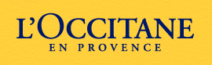
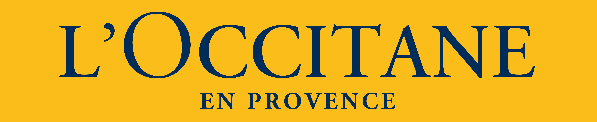
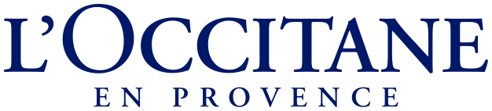
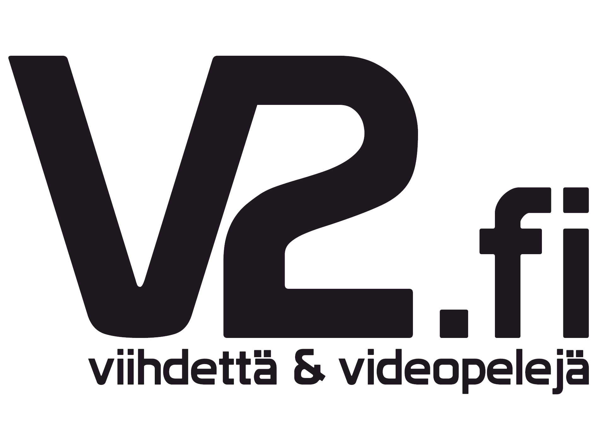

록시땅 L’OCCITANE
록시땅(L'OCCITANE)은 프랑스 프로방스의 천연 원료에서 영감을 받은 스킨·바디케어 브랜드이다.
최종 업데이트
록시땅은 어떤 브랜드인가
록시땅(L'OCCITANE en Provence)은 1976년 올리비에 보상(Olivier Baussan)이 프랑스 남부 프로방스에서 야생 로즈마리를 증류해 에센셜 오일을 만들며 시작한 자연주의 뷰티 브랜드다. 23세 청년이 증류기 하나와 작은 트럭으로 노천 시장에서 식물 오일을 팔던 것이 출발점이었고, 1981년 볼크스(Volx) 마을에 첫 공장과 부티크를 열었다.
부르키나파소산 시어버터, 프로방스 버베나와 이모르뗄(불멸화) 같은 지중해 식물 원료를 앞세워 핸드케어와 스킨케어로 세계 90여 개국에 진출한 글로벌 그룹으로 성장했다.
록시땅은 어떻게 봐야 할까
록시땅의 핵심 차별점은 합성 향료 중심의 대량 화장품과 달리 프로방스의 식물 식생을 원료 서사로 끌어올린 점이다. 1980년대부터 부르키나파소 여성 협동조합에서 시어버터를 직접 들여오며 ECOCERT 인증과 공정무역 원칙을 결합해, 원료 추적성과 산지 공동체 소득 창출을 브랜드 정체성으로 묶었다.
산업적으로 결정적인 변화는 2024년이다. 회장 라인홀트 가이거(Reinold Geiger)가 주당 34홍콩달러, 약 60억 유로 규모로 잔여 지분을 인수하고 블랙스톤·골드만삭스 대체투자(약 15억 5천만 유로 출자)의 지원을 받아, 같은 해 9월 14년간 이어진 홍콩 증시 상장을 자진 폐지하며 비공개 기업으로 전환했다.
분기 실적 압박에서 벗어나 장기 자연주의 노선을 유지하려는 포석으로 해석된다. 한국에서는 면세·올리브영·온라인몰을 통해 핸드크림 라인이 자연주의 수입 뷰티의 대중적 입지를 굳혔다.
록시땅은 어떻게 시작되고 성장했나
기원은 1976년으로 거슬러 올라간다. 식물에 밝았던 23세 올리비에 보상은 프로방스의 야생 로즈마리와 라벤더를 증기 증류해 에센셜 오일을 만들어 노천 시장에서 팔았고, 이듬해 마노스크의 오래된 비누 공장에서 마르세유 전통 비누 제조법을 되살렸다.
1981년 볼크스에 첫 공장과 부티크가 문을 열며 사업의 골격이 잡혔다. 1980년대 초 보상은 부르키나파소의 수천 년 된 시어나무 열매에서 추출하는 시어버터를 발견했고, 이를 현지 여성 협동조합에서 직접 들여오는 방식으로 도입해 핵심 원료이자 브랜드 서사로 정착시켰다.
1994년 라인홀트 가이거가 경영에 합류해 지배 지분을 확보하며 글로벌 확장을 가속했고, 2010년 룩셈부르크 법인 록시땅 인터내셔널이 홍콩증권거래소에 상장되며 아시아 자본시장에 안착했다.
록시땅의 브랜드 아이덴티티는 무엇인가
가치관의 축은 자연 원료에 대한 진실성과 공정무역이다. 프로방스 식물원료, 부르키나파소 시어버터의 산지 직거래, ECOCERT 인증, 시각장애인을 위한 점자 표기 같은 사회적 약속을 브랜드의 본질로 삼는다.
노란 바탕에 손글씨풍 흑갈색 워드마크와 프로방스 옥시탄어(오크어) 지명을 차용한 이름은 남프랑스 전원의 분위기를 시각화한다. 타깃은 합성 화장품보다 식물성·자연주의를 선호하는 30~50대 여성이 중심이며, 보이스는 과장된 미용 약속 대신 산지·식물·장인의 이야기를 차분히 들려주는 서술형 톤을 유지한다.
록시땅의 대표 제품과 서비스는 무엇인가
록시땅은 지금 어떤 상태인가
현재 록시땅 그룹은 회장 라인홀트 가이거가 주도한 인수로 2024년 비상장 기업으로 전환했으며, 블랙스톤과 골드만삭스 대체투자가 재무 파트너로 참여했다. 본사 법인은 룩셈부르크에 등록돼 있고 핵심 생산·연구 거점은 프로방스 마노스크에 있다.
2024 회계연도 매출은 약 25억 4천만 유로, 영업이익은 약 2억 3천만 유로 수준으로 공시됐으나, 비공개 전환 이후의 세부 실적과 지분 구조는 미공개다.
록시땅 연혁 — 주요 사건은 언제였나
록시땅 로고는 어떻게 변해왔나

BI/CI 아카이브보관 이미지 1
BI/CI 아카이브 2보관 이미지 2
BI/CI 아카이브 3보관 이미지 3
BI/CI 아카이브 4보관 이미지 4자주 묻는 질문
록시땅의 브랜드 아이덴티티는 무엇인가요?
가치관의 축은 자연 원료에 대한 진실성과 공정무역이다.
록시땅의 대표 제품은 무엇인가요?
대표 제품은 1993년 출시 이래 시어버터를 20% 함유한 시어버터 핸드크림으로, 미국 기준 30ml가 약 14달러, 150ml가 약 34달러대다.
록시땅는 어느 기업이 소유하고 있나요?
현재 록시땅 그룹은 회장 라인홀트 가이거가 주도한 인수로 2024년 비상장 기업으로 전환했으며, 블랙스톤과 골드만삭스 대체투자가 재무 파트너로 참여했다.
록시땅의 공식 웹사이트는 어디인가요?
록시땅의 공식 웹사이트는 https://www.loccitane.com/ 입니다.
출처와 검증
록시땅 관련 참고: 공식 웹사이트. 브랜드명은 한글과 원어를 함께 표기하되 데이터에 없는 표기는 만들지 않습니다. 기원 국가·설립연도는 검수된 정의문에서 확인된 값을 우선하고, 없을 때만 공식 웹사이트 URL이 일치하는 위키데이터 개체의 값을 씁니다.